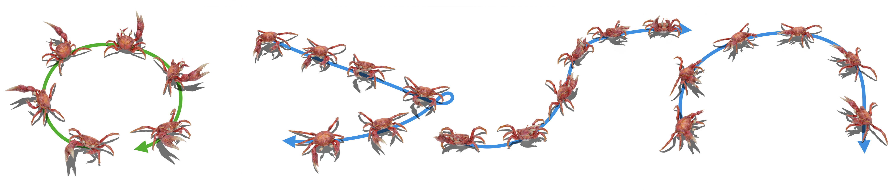
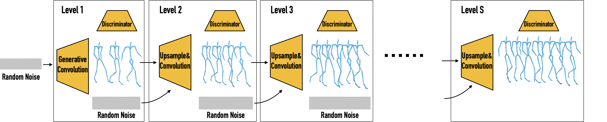

GANimator: Neural Motion Synthesis from a Single Sequence
SIGGRAPH 2022


Paper
Code
Model
We present GANimator, a generative model that learns to synthesize novel motions from a single, short motion sequence. GANimator generates motions that resemble the core elements of the original motion, while simultaneously synthesizing novel and diverse movements. It also enables applications including crowd simulation, key-frame editing, style transfer, and interactive control for a variety of skeletal structures e.g., bipeds, quadropeds, hexapeds, and more, all from a single input sequence.
Inspired by SinGAN [Rott Shaham et. al, 2019], GANimator leverages the information contained within a single motion sequence over multiple scales and time. We use a multiscale hierarchical generative neural network, where each level is responsible for learning the distribution of temporal patches at a different resolution.

Our framework contains a series of generative and adversarial neural networks built upon skeleton-aware operators of Aberman et al. [2020], each responsible for generating motions in a specific frame rate. The framework progressively learns to synthesize motion from random noise, enabling hierarchical control over the generated motion content across varying levels of detail.
Given a motion sequence, our framework can generate a myriad of novel and diverse motions that contain the same visual content as the input sequence:

We compare our generated results to classic and state-of-the-art techniques that can use a single input sequence. We can see that our method generates high quality motions with global structure variations, while other methods may collapse into a static pose or generate unnatural transitions with poor foot contact.

By conditioning the coarsest level in our framework with a given motion sequence, the output maintains the coarse content of the input but applies the high frequencies embedded in the network, resulting in a motion style-transfer framework with comparable quality to state-of-the-art results trained on large datasets:
By editing a couple of keyframes at the coarse level and passing them to the network, we can obtain a seamless and natural sequence without the need for interpolation that may lead to undesired artifacts:

When conditioning the network with a global trajectory, we can control the global motion of the various characters including a hexapod crab. It can be seen that our outputs provide comparable quality while our network uses less than 1% of the data:


@article{li2022ganimator,
author = {Li, Peizhuo and Aberman, Kfir and Zhang, Zihan and Hanocka, Rana and Sorkine-Hornung, Olga },
title = {GANimator: Neural Motion Synthesis from a Single Sequence},
journal = {ACM Transactions on Graphics (TOG)},
volume = {41},
number = {4},
pages = {138},
year = {2022},
publisher = {ACM}
}